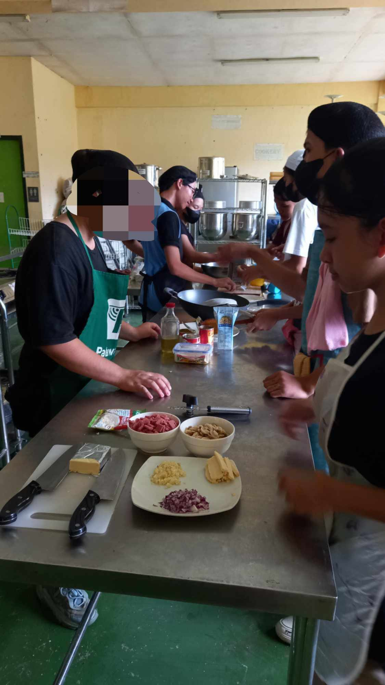

WHAT IS HOME ECONOMICS?
Home Economics is a multifaceted field focusing on the management of home and community resources. Within the K-12 Curriculum in the Philippines, particularly under the TVL track, H.E. equips students with essential knowledge and skills related to nutrition, food preparation, family management, and textiles. Students learn to apply practical techniques for cooking, budgeting, and effective household management.
FUTURE JOBS
- NUTRITION ASSISTANT - Nutrition assistants are employees who work in the healthcare industry. It's their job to educate clients and patients on healthy eating habits and general nutrition.
- HOUSEHOLD MANAGER - house manager prepares meals, organizes events, runs errands, helps with administrative tasks, walks pets, pays bills, and the like.
- BAKERY ASSISTANT - Bakery Assistants assist bakers and pastry chefs by serving customers at counters where baked goods are sold.
- CHIEF - The chief job description usually entails preparing,seasoning, and decorating meals and dishes in ways the suit the requirements or orders that are placed by customers.
H.E UTENSILS

H.E STUDENTS
